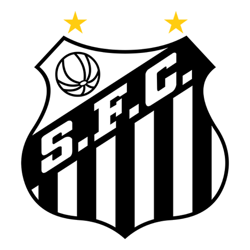
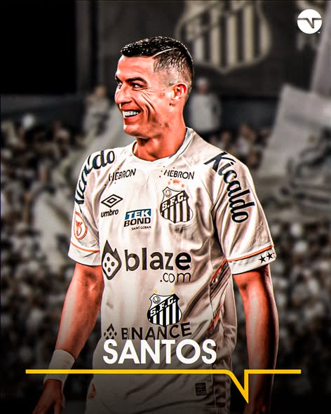
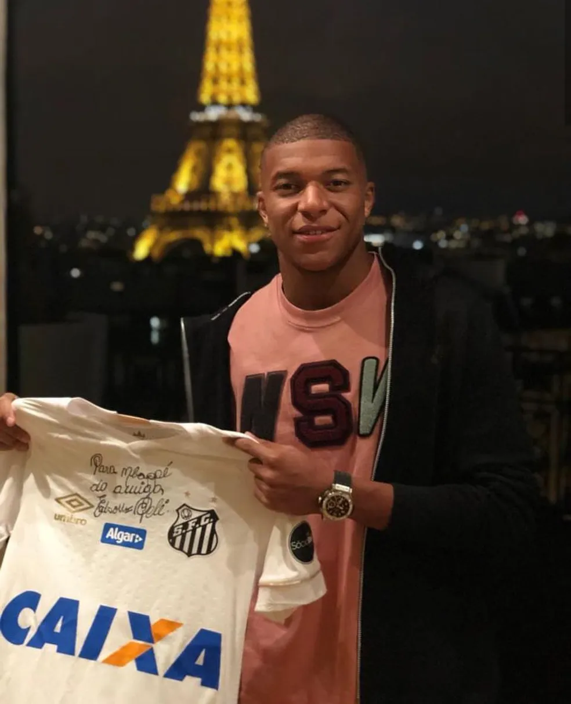
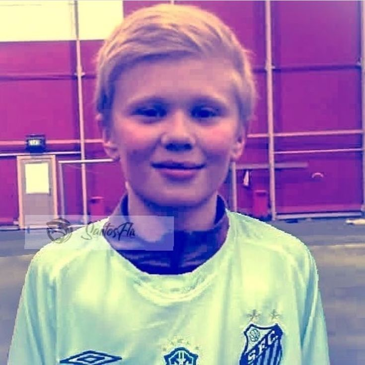
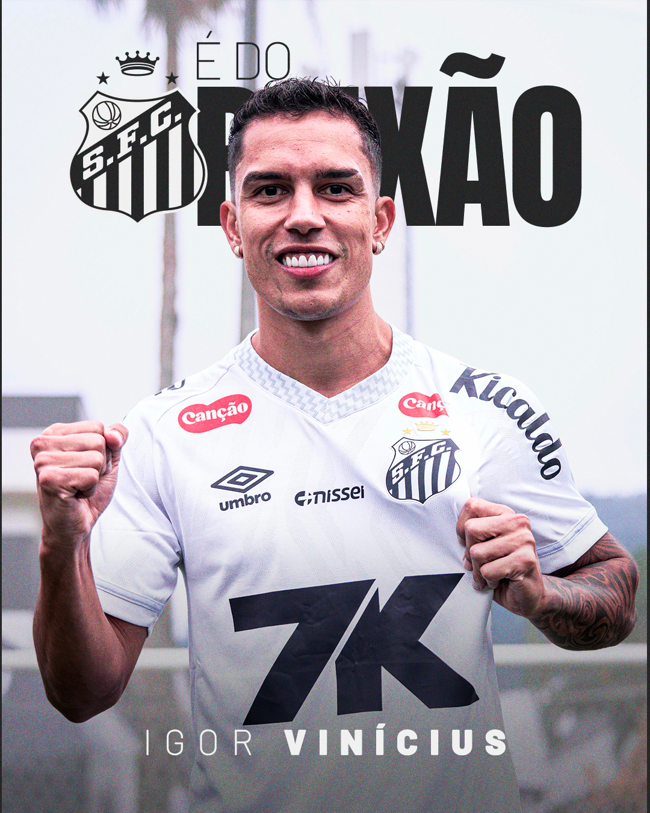
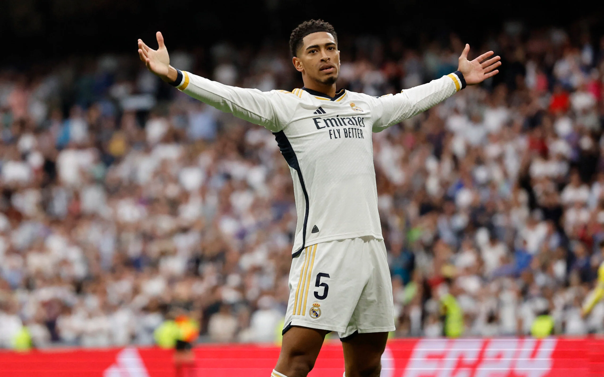
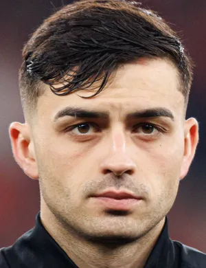
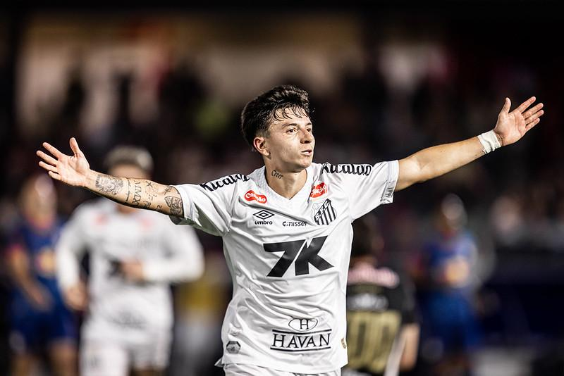
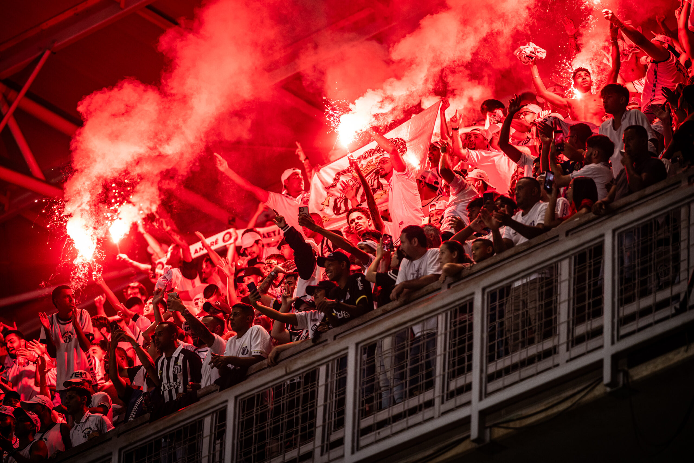

Lionel Messi
Camisa 10 • Inter Miami
Destaque mundial
Camisa 10 • Inter Miami
Destaque mundial
Camisa 7 • Al-Nassr
Ídolo histórico
Camisa 10 • Brasil
Técnica e criatividade
Atacante • França
Velocidade e decisão
Centroavante • Noruega
Força e gols
Lateral • Brasil
Velocidade
Meio-campo • Inglaterra
Controle e visão
Meio-campo • Espanha
Qualidade no passe
Ponta • Espanha
Jovem destaque
Jogadores em grande fase, com atuações decisivas e muita presença dentro de campo.

O estádio, a torcida e a atmosfera ajudam a transformar o futebol em espetáculo.